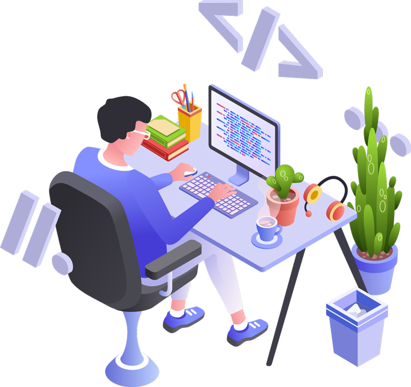

Hi, My name is Aninda
and I am a passionate

Knowledge Experience

HTML Developer
I am a skilled HTML developer with a passion for creating engaging and user-friendly web
experiences. With a solid understanding of HTML, CSS, and a touch of JavaScript, I specialize in
building the front-end of websites that captivate and connect with users.

CSS Developer
I am a dedicated CSS developer who combines technical expertise, creativity, and attention to
detail to transform designs into captivating web experiences. With a focus on responsive design,
cross-browser compatibility, and optimized performance, I strive to deliver visually appealing
and user-friendly websites that leave a lasting impression.
JS Developer
I am a passionate JavaScript developer with a strong focus on front-end development. With a deep
understanding of JavaScript and its frameworks, I strive to create dynamic and interactive web
applications that provide seamless user experiences. My expertise lies in developing robust,
scalable, and efficient solutions using modern JavaScript libraries and tools.

DSA
With my expertise in DSA, problem-solving abilities, and a comprehensive understanding of
software development, I'm poised to tackle complex programming challenges and deliver
high-quality solutions.